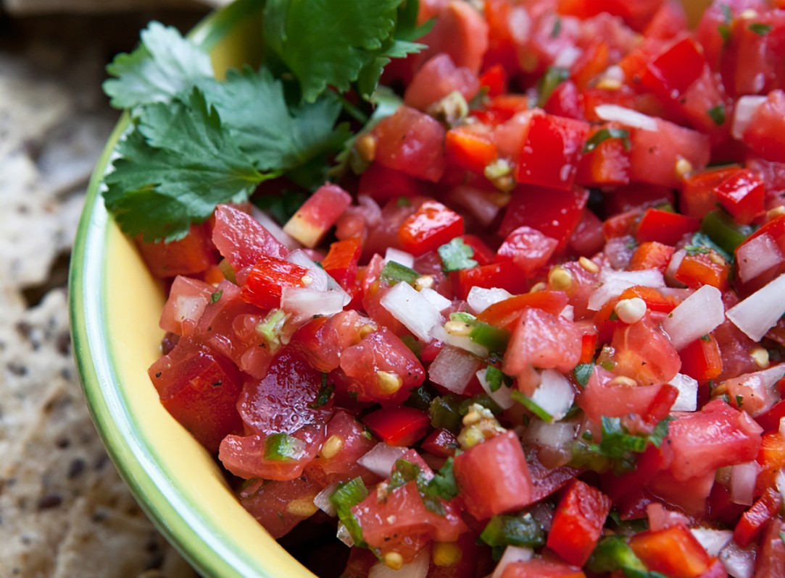

Curiosos por naturaleza
Se produce el encuentro de la cocina del maíz y la del trigo, se combinan el tomate y la calabaza, el chile y la cebolla, el cacao y la leche, mezclas y combinaciones que fueron definiendo los gustos y estableciendo tradiciones.

El menú hace imprescindible una sopa o caldo bien caliente y picante para atemperar el 'frío'. Sopas como la de frijol rojo, blanco o negro; otra bastante antigua es la de patas. De los guisados sobresalen por su antigüedad la chanfaina. La primera se elabora con menudos de venado o carnero, en la actualidad se cocina con vísceras de cerdo.
Al hablar de los menús salvadoreños podemos destacar que un desayuno salvadoreño está formado principalmente de frijoles fritos, salcochados o casamiento; con queso o crema. También se incluyen los plátanos fritos o asados; así como el huevo estrellado, revuelto, duro o tibio. Se acompaña con tortillas o pan simple; sin faltar la bebida caliente de café, leche o chocolate.
En postres y dulces, la gastronomía salvadoreña mantiene una amplia variedad que nos llega de siglos atrás. La introducción de la caña de azúcar modificó los endulzantes, surgió la panela que, a su vez, fue sustituida por el azúcar refinada en dulces; no obstante, aún hoy la panela se usa en nuégados, hojuelas u hojaldras, así como en el ayote dándole un sello particular.